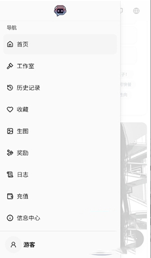

RiliAI 翻了个底朝天——那些藏得真深的 5 个玩法
你以为它就是个选角色开聊的 AI 聊天 app？其实无限制模式、角色背景故事模板、缓存清理边界、长消息拆分、模型切换这些隐藏功能，官方几乎不教，但用对了体验直接翻倍。
你以为 RiliAI官网 就是个选个角色开聊的 AI 聊天 app？装完打开——安装包从 官方下载 拿就行——注册登录、挑个顺眼的角色，发条消息，完事儿。我一开始也这么想，直到连续熬了三个晚上把设置里每个角落都点了一遍，才发现它藏着好几个让体验直接翻倍的冷门玩法——官方几乎不教，社区也很少有人提，但用对了，那感觉就像买了辆车才发现方向盘底下还藏着个弹射起步按钮。
第一个：无限制模式，藏在设置里的开关
这可能是 RiliAI 最被低估的功能了。你有没有过在别的 AI 聊天产品里，聊到一半突然被截断或者直接拒绝回复？或者正玩着剧情互动，想探索点不一样的分支，结果 AI 突然"政治正确"起来，把氛围全毁了？
打开无限制模式，屏蔽词的数量会大幅减少——不是完全没限制，但比默认的严格模式松得多。AI 不会主动给你设边界，你自己决定对话能走多远。
具体在哪呢？进入应用的设置界面，找"对话模式"或者"内容偏好"相关的选项，里面会有一个明确的开关。它默认是关闭的，这个设计本身就挺有意思——给那些不想被打扰的用户一个安静的环境，也给想折腾的人一扇门。
什么人用得上？喜欢剧情互动、自己创建自定义角色的用户最该开。如果你的对话伙伴是自己写的角色设定，想开着它探索各种情节分支，不开无限制模式等于自缚手脚。但如果你就是日常问问问题、做点文字助手的活儿，保持默认就好，毕竟宽松模式下 AI 的回复有时候会跑偏。

第二个：角色背景故事不是瞎写的——有模板
我一开始给自定义角色写背景故事，就是三言两语糊弄过去："一个性格冷淡的程序员妹子，叫小林"。结果对话起来 AI 老是出戏，一会儿像个话痨，一会儿又突然变得很萌。
后来去 RiliAI文档 翻了一下才知道，RiliAI 的角色背景故事根本不是随便写的，它有一套隐形的结构模板，照着这个结构写，AI 的回复会稳定得多，代入感翻好几倍。
模板分五块：基本信息（名字、年龄、身份、生活环境）、性格概述（两三句话说核心性格，可以加正反面，比如"表面冷淡但内心柔软"）、重要经历（能塑造性格的关键事件，不是流水账）、内心矛盾或执念（角色最大的心结，这是剧情推进的内在动力）、说话风格（习惯用语、什么话题下有特殊反应）。
重点是别写流水账。我之前给一个杀手角色写背景，写了半页他从出生到当杀手的完整经历，结果 AI 根本吃不下那么长——过长的背景故事反而会被截断或者忽略。抓住最核心的几个设定，留出空间让 AI 自己发挥，效果反而更好。
还有个细节：背景故事是"离线"的，创建时一次输入，之后就固定了；但你可以在对话过程中逐步补充设定，这些"在线"的补充会和背景故事配合，让角色慢慢"活"起来。
第三个：清理缓存 vs 清除数据，别点错
用久了 RiliAI，手机里会积累一堆东西：对话历史、角色信息缓存、运行产生的临时文件。定期清理一下有助于保持流畅，但这里有个大坑——很多人分不清"清理缓存"和"清除数据"的区别，手一抖就把所有东西清没了。
清理缓存很简单，安卓系统层面就能做：设置 → 应用管理 → 找到 RiliAI → 存储 → 清理缓存。这个操作只会删除临时文件，不会影响你的对话历史和账号信息，放心点。
但千万别点旁边那个"清除数据"或者"清除存储"——那玩意儿会把所有本地数据清空，相当于全新安装，你辛辛苦苦写的自定义角色、所有对话记录，全没了。
应用内部也有清理入口，进入某个角色的对话界面，在设置里能找到清空对话的选项。批量清理的话，可能有统一的对话历史管理入口。注意：删除对话历史不会删除角色本身，只是清空对话记录，这个逻辑很多人也搞不清楚。

第四个：长消息发出去变慢？拆成几段
有时候我会发一大段设定或者剧情给 AI，等它回复的时候就一直转圈，等半分钟都没动静。一开始以为是网络问题，后来发现是 AI 处理长输入本身就需要更多时间——输入越长，处理越慢。
解决办法很简单：把长消息拆成几段发。比如你想给角色一段完整的背景设定，别一次性 500 字砸过去，拆成两三段发，AI 处理每一段的速度会快很多，对话体验也会流畅得多。
当然，如果是服务器临时压力大，拆了也没用——这时候可以看看应用商店评论区有没有类似反馈，过一阵再试就好。有时候换个模型也能解决，不同模型的响应速度差异其实挺大的，某个模型一直慢的话，可能是在维护或者限流。
第五个：模型切换，别只用默认的
说到模型切换，这也是个很多人没太在意的技巧。RiliAI 里不止一个模型可选，但大部分人注册完就一直用默认的那个，从来没去换过。
不同模型的差异真的挺大的——有些响应快但偶尔会偷懒，有些回复质量高但等的时间长，有些在特定领域（比如角色扮演、剧情生成）表现特别好，有些就偏通用助手路线。如果你发现某个角色的 AI 回复总是差那么点意思，不妨试试换个模型再对话，说不定效果直接不一样。
切换入口也很容易找，就在对话界面顶部或者侧边栏的模型选择处，点一下就能换，不用重新创建角色，也不会丢对话历史。
一个提醒：无限制模式也不是真的"无限制"
说了这么多隐藏玩法，最后补一个坑。无限制模式虽然自由度高，但它也不是完全没底线——应用的基本使用规范和法律法规还是要遵守的。而且部分模型本身自带一定的回复边界，就算你开了无限制模式，模型底层的限制也不会完全绕过。
我的建议是根据实际需求灵活开关：剧情互动、自定义角色探索的时候打开，日常普通对话的时候关上，这样既能享受开放的对话体验，又不会在不需要的时候给自己添乱。
RiliAI 这种产品，很多功能都不会摆在明面上让你第一眼就看到。它不像某些 app 把功能做成引导弹窗教你用，而是把入口藏在设置的三级菜单、对话界面的不起眼角落，等着愿意折腾的人自己挖出来。花点时间把它翻透，体验真的不一样。我整理的这套资料在 GitHub、Gitee、GitCode 三个平台都有同步，怕哪个挂了访问不了，多存一份稳妥。